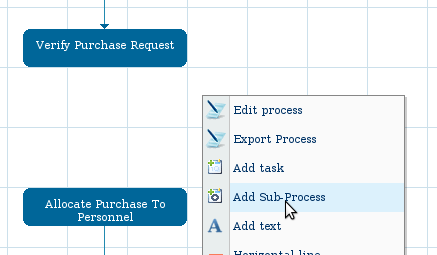
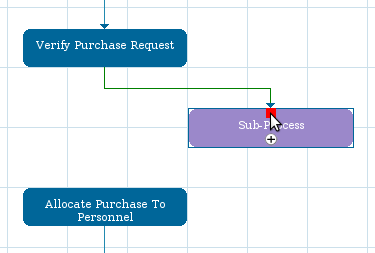
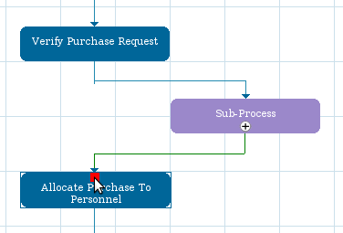
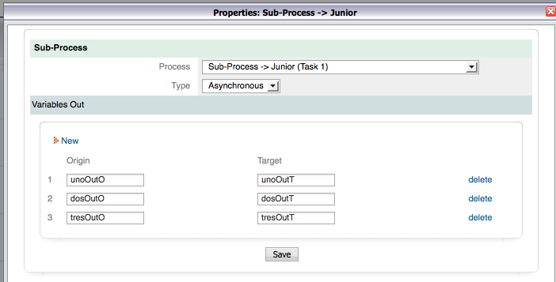
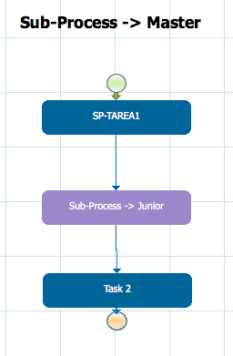
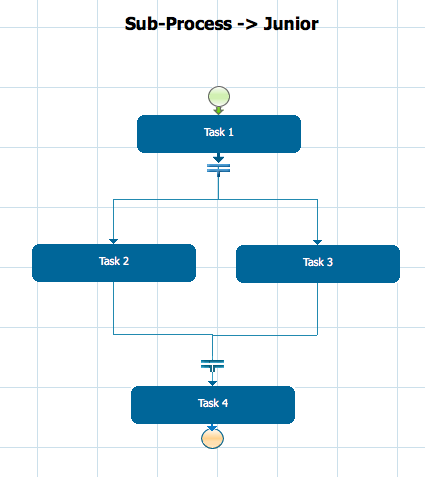
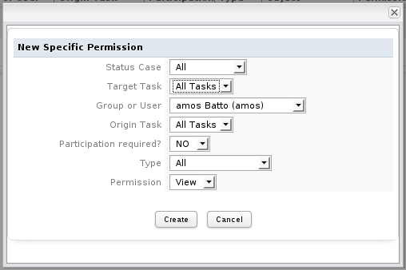

- Overview
- Types of Sub-Processes
- Adding a Sub-Process to a Master Process
- Example
- Accessing Objects from Master/Subprocess Cases
- Read-only Access to Objects from the Master Case
- Read-only Access to Objects from the Subprocess Case(s)
- Write Access To Objects from the Master Case
- Accessing Subprocesses in Triggers
- Accessing Subprocess Cases
- Setting Variables In Subprocess Cases
- Mailing currently Designated Users for Subprocess Cases
- Mailing links to Master and Subprocess Cases
- Displaying a List of Subprocess Cases in a Grid
- Displaying a List of Subprocess Cases in a Text Report
- Accessing the Master Process Case
- Getting case variables from the master process case
- Accessing all fellow Subprocess Cases
- Accessing all Associated Cases
- Mailing all Participants in Master And Subprocess Cases
- Routing Subprocess Cases after a Specified Time
- Routing Subprocess Cases from the Master Case
- Linking to Documents from the Master Case
- Linking to Documents from Subprocess Case(s)
Overview
Sub-Processes allow child processes to be inserted into master processes. It is recommended to break large processes into separate master processes and child processes, because it reduces the complexity of the process map and allows sub-processes to handle exceptional situations and ancillary activities. Sub-Processes are also useful for hooking the functionality of an existing process into another process.
Master processes and sub-processes are created separately as normal processes, but a sub-process task is added to the master process which calls the sub-process. Cases are started normally in the master process, but when a case reaches the task which links to the sub-process, a new case is created to execute the sub-process. Variables can be passed from the master process's case to the sub-process's case, so the sub-process can work with the data from the master process.
Types of Sub-Processes
A sub-process can be either synchronous or asynchronous. If the sub-process is synchronous, then the execution of the master process's case will pause and wait for the sub-process's case to complete, before continuing its execution. When an synchronous sub-process finishes, variables can be passed from the sub-process's case back to the master process's case.
If the sub-process is asynchronous, then the execution of the master process does NOT pause and wait for the sub-process case. Instead, the master process immediately continues with its subsequent tasks. Both the master process's case and the sub-process's case continue executing in their own separate time. Because the master process does not wait for the sub-process, variables are NOT passed back to the master process, when an asynchronous sub-process finishes.
Adding a Sub-Process to a Master Process
First, create the master process and sub-process separately as normal processes. Then, open the process that will be the master process. Right click on its process map and select the Add Sub-Process option from the dropdown menu.

After creating the sub-process task, then connect it to a task in the master process with a routing rule. Any type of routing rule can be used to connect the prior task in the master process to the sub-process task.

Then, connect the sub-process task back to the master process with another routing rule.

It is also possible to end the master process on a sub-process task by assigning an End of Process routing rule to the task.

Defining the Sub-process Properties
After connecting the sub-process with routing rules, then define the properties for the sub-process. Right click on the sub-process task and select the Properties option from the dropdown menu.

In the "Properties" dialog box that appears, define the properties of the new sub-process:

Fill in the following information:
- SubProcess name: Enter a name to identify the sub-process.
- Process: Select the existing process that should be used as a Sub-Process. Choose one process from the list of existing processes.
- Type: Select whether the sub-process will be Synchronous or Asynchronous. For more information, see Types of Sub-Processes.
Variables Out (and In)
Select which variables will be passed between the master process and the subprocess. The variables can have different names in the master process and subprocess, so each variable from the master process must be matched with a variable in the subprocess. If the subprocess is synchronous, then also define which the variables will be passed back from the sub-process to the master process.
Variables Out
Select which variables from the master process (Origin) will be passed to variables in the Sub-Process (Target). Either type in the variable name or click on the [@@] button to select a variable from the list of available variables in the process. Remember that variable names are case sensitive, so @@MyVar is different from @@myvar.
- Origin: Enter the name of variable(s) from the master process to be passed to the sub-process.
- Target: Enter the name of variable(s) from the sub-process which will receive the data from the master process's variable(s).
Note: Any case variables defined in triggers, plus grid, checkgroup, file and listbox fields do not appear in the list of available variables to be passed from the master process to the subprocess. Nonetheless, these variables may be passed by manually typing them into the Origin and Target fields.
Variables In
If the Type of sub-process is synchronous, a second section will appear to select which variables are passed back from the subprocess (Origin) to the master process (Target).
- Origin: Enter the name of variable(s) from the sub-process to be passed to the master process.
- Target: Enter the name of variable(s) from the master process which will receive the data from the sub-process's variable(s).
When done defining the sub-process's properties, click on Save. To cancel any changes, click on [X] in the upper right hand corner of the dialog box's title bar.
Removing a subprocess from the starting cases list
Available Version: From 2.5 on.
When a case is about to start, it's difficult to distinguish the main process from the SubProcess or going back to the main list of process to check whether the name of the main process is. To avoid this, a new option was added, where it is possible decide which one will be the SubProcess.
On Designer tab choose the SubProcess from the list of process, double click over it or choose it and click on Edit. Then right click in the Process Map and choose the Edit Processoption. Choose the option: This is a subprocess:

Once this is defined, the subprocess won't be displayed on the list of cases to be started.
Note: This option does not work in the user experience skin.
Example
The Master Process shown in the image includes a Sub-Process.

When a case arrives at the second task, Sub-process Junior, it begins a new case in the Sub-process.

The Sub-Process properties are defined as follows:
- The Sub-Process is called "Junior"
- The Sub-Process is Asynchronous
- Variables in the Master Process give the input for Variables in the Sub-Process
Accessing Objects from Master/Subprocess Cases
By default, the users working on subprocess cases will not have access to the DynaForms, Input Documents and Output Documents from the master case. Likewise, the users working on master cases, will not have access to the DynaForms and documents from the subprocess cases.
Read-only Access to Objects from the Master Case
To allow the users working on subprocess cases to have access to the DynaForms, Input Documents and Output Documents from the master case, create Process Permissions in the master process which will give those users read-only access.

When defining the Process Permissions, select "NO" for the Participation Required? option (unless the users also participated in the master case). However, this means that the users will have access to all master cases, not just the master case for their subprocess case. If this is not desirable, see the workaround for Linking to Documents from the Master Case.
Assigning Process Permissions will give the users of subprocess cases read-only access to the master cases, but normal users with the PROCESSMAKER_OPERATOR role won't be able to see those master cases under the HOME menu (unless they also were designated to work on them). In order to see the master cases, assign a role with the PM_ALLCASES permission to those users. Then, the users will be able to find the master cases by going to HOME > Advanced Search. In order to easily find the Input and Output Documents from the master cases, assign a role with the PM_FOLDER_VIEW permission to those users. When defining the Input and Output Documents for the master process, set directories (and subdirectories) for the Destination Path so that the files for the master cases can easily be found by the users by going to HOME > Documents and clicking on the directory (and subdirectories).
In the users working on sub-process cases need to be able to change the data in DynaForms and upload new Input Document files in the master case, then assign those users to a role which has the PM_SUPERVISOR permission and then assign them as Process Supervisors for the master process.
Read-only Access to Objects from the Subprocess Case(s)
To allow the users working on the master case to have access to the DynaForms, Input Documents and Output Documents from the subprocess case(s), create Process Permissions in the master process which will give those users read-only access, as shown in the section above.
When defining the Process Permissions, select "NO" for the Participation Required? option (unless the users also participated in the subprocess case(s)). However, this means that the users will have access to all subprocess cases, not just the subprocess case(s) for their master case. If this is not desirable, see the workaround for Linking to Documents from Subprocess Case(s).
Write Access To Objects from the Master Case
DynaForms
If inside a subprocess case and needing write access to DynaForms from the master case, then the best solution is to create a DynaForm with the same fields in the subprocess.
The XML code from the master process DynaForm can be copied into the the subprocess DynaForm. Remember to not copy the XML header which contains the name of the DynaForm, since two DynaForms can not have the same name:
<dynaForm type="xmlform" name="4759685564f7da243c321f2021904585/3666076414f7da2ab1ca927068712748" width="500" enabletemplate="0" mode="edit">
When defining the subprocess task, select all the DynaForm fields to be passed from the master process to the subprocess. If the subprocess is asynchronous, so the DynaForm fields might be updated in the master process while the subprocess is running, then see Setting Variables In Subprocess Cases.
If the master case needs to be able to see the changes made to the DynaForm in the subprocess case, then there are two options:
- If a synchronous subprocess, pass the DynaForm field variables from the subprocess to the master process with Variables Out option when defining the subprocess task.
- If an asynchronous subprocess, pass the Dynaform field variables from the subprocess to the master process with a trigger in the master process.
Input Documents
If inside a subprocess case and needing write access to Input Documents from the master case, then create an Input Document in the subprocess which corresponds to the Input Document from the master case. Then, create a Trigger in the subprocess to transfer the Input Document files from the master case to the subprocess case. Set this Trigger to fire before the Input Document step in the subprocess case.
For example, if the Input Document in the master process has the unique ID "3978814374f637be5852e27080729640" and its corresponding Input Document in the subprocess has the unique ID "8018127764f637c28a5b724062237120", then the following trigger fired in the subprocess could transfer the Input Document files from the master case to the subprocess case:
$subInpDocId = "8018127764f637c28a5b724062237120"; //set to the UID of the subprocess' Input Document
//Find the master process case UID:
$subcaseId = @@APPLICATION;
$result = executeQuery("SELECT APP_PARENT FROM SUB_APPLICATION WHERE APP_UID='$subcaseId'");
if (is_array($result) and count($result) > 0) {
$masterCaseId = $result[1]['APP_PARENT'];
//Look up all the Input Document files from the master case
$files = executeQuery("SELECT * FROM APP_DOCUMENT WHERE APP_UID='$masterCaseId' AND DOC_UID='$masterInpDocId'");
foreach ($files as $file) {
$file['APP_UID'] = $subcaseId;
$file['DOC_UID'] = $subInpDocId;
$appDocTags = empty($file['APP_DOC_TAGS']) ? 'NULL' : "'{$file['APP_DOC_TAGS']}'";
$appDocStatusDate = empty($file['APP_DOC_STATUS_DATE']) ? 'NULL' : "'{$file['APP_DOC_STATUS_DATE']}'";
$query = "INSERT INTO APP_DOCUMENT (
APP_DOC_UID, DOC_VERSION, APP_UID, DEL_INDEX, DOC_UID, USR_UID, APP_DOC_TYPE, APP_DOC_CREATE_DATE,
APP_DOC_INDEX, FOLDER_UID, APP_DOC_PLUGIN, APP_DOC_TAGS, APP_DOC_STATUS, APP_DOC_STATUS_DATE
) VALUES (
'{$file['APP_DOC_UID']}', {$file['DOC_VERSION']}, '{$file['APP_UID']}', {$file['DEL_INDEX']}, '{$file['DOC_UID']}',
'{$file['USR_UID']}', '{$file['APP_DOC_TYPE']}', '{$file['APP_DOC_CREATE_DATE']}', {$file['APP_DOC_INDEX']},
'{$file['FOLDER_UID']}', '{$file['APP_DOC_PLUGIN']}', $appDocTags, '{$file['APP_DOC_STATUS']}', $appDocStatusDate
)";
executeQuery($query);
}
}
If the Input Document files need to be passed back from the subprocess case to the master case, the following trigger can be used to transfer the files. Set this Trigger to fire in the master case:
$subInpDocId = "8018127764f637c28a5b724062237120"; //set to the UID of the subprocess' Input Document
//Find the subprocess case UID:
$masterCaseId = @@APPLICATION;
$subcases = executeQuery("SELECT APP_UID FROM SUB_APPLICATION WHERE APP_PARENT='$masterCaseId'");
if (is_array($subcases) and count($subcases) > 0) {
$subcaseId = $subcases[1]['APP_UID']; //assuming that only one subprocess case
//Delete the master case Input Document files and replace them with the subprocess case files
executeQuery("DELETE * FROM APP_DOCUMENT WHERE APP_UID='$masterCaseId' AND DOC_UID='$masterInpDocId'");
//Look up the Input Document files from the subprocess case
$files = executeQuery("SELECT * FROM APP_DOCUMENT WHERE APP_UID='$subcaseId' AND DOC_UID='$subInpDocId'");
foreach ($files as $file) {
$file['APP_UID'] = $masterCaseId;
$file['DOC_UID'] = $masterInpDocId;
$appDocTags = empty($file['APP_DOC_TAGS']) ? 'NULL' : "'{$file['APP_DOC_TAGS']}'";
$appDocStatusDate = empty($file['APP_DOC_STATUS_DATE']) ? 'NULL' : "'{$file['APP_DOC_STATUS_DATE']}'";
$query = "INSERT INTO APP_DOCUMENT (
APP_DOC_UID, DOC_VERSION, APP_UID, DEL_INDEX, DOC_UID, USR_UID, APP_DOC_TYPE, APP_DOC_CREATE_DATE,
APP_DOC_INDEX, FOLDER_UID, APP_DOC_PLUGIN, APP_DOC_TAGS, APP_DOC_STATUS, APP_DOC_STATUS_DATE
) VALUES (
'{$file['APP_DOC_UID']}', {$file['DOC_VERSION']}, '{$file['APP_UID']}', {$file['DEL_INDEX']}, '{$file['DOC_UID']}',
'{$file['USR_UID']}', '{$file['APP_DOC_TYPE']}', '{$file['APP_DOC_CREATE_DATE']}', {$file['APP_DOC_INDEX']},
'{$file['FOLDER_UID']}', '{$file['APP_DOC_PLUGIN']}', $appDocTags, '{$file['APP_DOC_STATUS']}', $appDocStatusDate
)";
executeQuery($query);
}
}
Output Documents
If inside a subprocess case and needing write access to Output Documents from the master case, then create an Output Document in the subprocess which corresponds to the Output Document from the master case. Then, create a Trigger in the subprocess to transfer the Output Document files from the master case to the subprocess case. Set this Trigger to fire before the Output Document step in the subprocess case.
For example, if the Output Document in the master process has the unique ID "2167394654f60eb0694cce4042086437" and its corresponding Input Document in the subprocess has the unique ID "8867906164f75e1abc75422081548143", then the following trigger fired in the subprocess could transfer the Input Document files from the master case to the subprocess case:
$subInpDocId = "8867906164f75e1abc75422081548143"; //set to the UID of the subprocess' Output Document
//Find the master process case UID:
$subcaseId = @@APPLICATION;
$result = executeQuery("SELECT APP_PARENT FROM SUB_APPLICATION WHERE APP_UID='$subcaseId'");
if (is_array($result) and count($result) > 0) {
$masterCaseId = $result[1]['APP_PARENT'];
//Look up all the Input Document files from the master case
$files = executeQuery("SELECT * FROM APP_DOCUMENT WHERE APP_UID='$masterCaseId' AND DOC_UID='$masterInpDocId'");
foreach ($files as $file) {
$file['APP_UID'] = $subcaseId;
$file['DOC_UID'] = $subInpDocId;
$appDocTags = empty($file['APP_DOC_TAGS']) ? 'NULL' : "'{$file['APP_DOC_TAGS']}'";
$appDocStatusDate = empty($file['APP_DOC_STATUS_DATE']) ? 'NULL' : "'{$file['APP_DOC_STATUS_DATE']}'";
$query = "INSERT INTO APP_DOCUMENT (
APP_DOC_UID, DOC_VERSION, APP_UID, DEL_INDEX, DOC_UID, USR_UID, APP_DOC_TYPE, APP_DOC_CREATE_DATE,
APP_DOC_INDEX, FOLDER_UID, APP_DOC_PLUGIN, APP_DOC_TAGS, APP_DOC_STATUS, APP_DOC_STATUS_DATE
) VALUES (
'{$file['APP_DOC_UID']}', {$file['DOC_VERSION']}, '{$file['APP_UID']}', {$file['DEL_INDEX']}, '{$file['DOC_UID']}',
'{$file['USR_UID']}', '{$file['APP_DOC_TYPE']}', '{$file['APP_DOC_CREATE_DATE']}', {$file['APP_DOC_INDEX']},
'{$file['FOLDER_UID']}', '{$file['APP_DOC_PLUGIN']}', $appDocTags, '{$file['APP_DOC_STATUS']}', $appDocStatusDate
)";
executeQuery($query);
}
}
If the Output Document files need to be passed back from the subprocess case to the master case, the following trigger can be used to transfer the files. Set this Trigger to fire in the master case:
$subInpDocId = "8867906164f75e1abc75422081548143"; //set to the UID of the subprocess' Output Document
//Find the subprocess case UID:
$masterCaseId = @@APPLICATION;
$subcases = executeQuery("SELECT APP_UID FROM SUB_APPLICATION WHERE APP_PARENT='$masterCaseId'");
if (is_array($subcases) and count($subcases) > 0) {
$subcaseId = $subcases[1]['APP_UID']; //assuming that only one subprocess case
//Delete the master case Input Document files and replace them with the subprocess case files
executeQuery("DELETE * FROM APP_DOCUMENT WHERE APP_UID='$masterCaseId' AND DOC_UID='$masterInpDocId'");
//Look up the Input Document files from the subprocess case
$files = executeQuery("SELECT * FROM APP_DOCUMENT WHERE APP_UID='$subcaseId' AND DOC_UID='$subInpDocId'");
foreach ($files as $file) {
$file['APP_UID'] = $masterCaseId;
$file['DOC_UID'] = $masterInpDocId;
$appDocTags = empty($file['APP_DOC_TAGS']) ? 'NULL' : "'{$file['APP_DOC_TAGS']}'";
$appDocStatusDate = empty($file['APP_DOC_STATUS_DATE']) ? 'NULL' : "'{$file['APP_DOC_STATUS_DATE']}'";
$query = "INSERT INTO APP_DOCUMENT (
APP_DOC_UID, DOC_VERSION, APP_UID, DEL_INDEX, DOC_UID, USR_UID, APP_DOC_TYPE, APP_DOC_CREATE_DATE,
APP_DOC_INDEX, FOLDER_UID, APP_DOC_PLUGIN, APP_DOC_TAGS, APP_DOC_STATUS, APP_DOC_STATUS_DATE
) VALUES (
'{$file['APP_DOC_UID']}', {$file['DOC_VERSION']}, '{$file['APP_UID']}', {$file['DEL_INDEX']}, '{$file['DOC_UID']}',
'{$file['USR_UID']}', '{$file['APP_DOC_TYPE']}', '{$file['APP_DOC_CREATE_DATE']}', {$file['APP_DOC_INDEX']},
'{$file['FOLDER_UID']}', '{$file['APP_DOC_PLUGIN']}', $appDocTags, '{$file['APP_DOC_STATUS']}', $appDocStatusDate
)";
executeQuery($query);
}
}
Accessing Subprocesses in Triggers
When a subprocess case is created, it is created like a normal case with a record in the wf_WORKSPACE.APPLICATION table with a separate case unique ID and case number which is different from the master case. In addition, a new record is added to the wf_WORKSPACE.SUB_APPLICATION table, whose APP_PARENT field is set to the case UID for the parent case. Just like a normal case, as each task is executed in the subprocess case, a new record is added to the wf_WORKSPACE.APP_DELEGATION table. wf_WORKSPACE.APP_DELEGATION table needs to be queried to find out who are is currently assigned user to the subprocess case. executeQuery() function can be used inside a Trigger to query these tables to look up the master process case and subprocess cases.
Accessing Subprocess Cases
If running a case in the master process, then all the subprocess cases can be found with the following query in a trigger:
Setting Variables In Subprocess Cases
In the following example, the subprocess cases are asynchronous to the master process so the master process case is still being worked on and its data is being changes as the subprocess cases are running. To make sure that the subprocess cases are kept apprised of the master case's data as it changes, a trigger is fired in the master process case to create a new case variable named "masterCaseVars" in all the subprocess cases. "masterCaseVars" is an associative array of all the case variables from the master case, which all the subprocess cases can then access:
$masterC = new Cases();
$aInfo = $masterC->loadCase($caseId);
$masterCaseVars = $aInfo['APP_DATA'];
$subcases = executeQuery("SELECT APP_UID FROM SUB_APPLICATION WHERE APP_PARENT='$caseId'");
if (is_array($subcases) and count($subcases) > 0) {
foreach ($subcases as $subcase) {
$subcaseId = $subcase['APP_UID'];
$subC = new Cases();
$aCaseInfo = $subC->loadCase($subcaseId);
$subCaseAppData = $aCaseInfo['APP_DATA']; //get case variables from subprocess case
$subCaseAppData['masterCaseVars'] = $masterCaseVars; //add @@masterCaseVars case variable
$subCaseAppData = serialize($subCaseAppData); //store in serialized form for insert into DB
executeQuery("UPDATE APPLICATION SET APP_DATA='$subCaseAppData' WHERE APP_UID = '$subcaseId'");
}
}
Now the case variables from the master case can be accessed inside the subprocess cases through triggers. For example, to display the @#runningTotal and @=expensesGrid variables from the master case in a DynaForm in the subprocess case, fire the following trigger before the DynaForm:
@@runningTotal = @=masterCaseVars['runningTotal'];
@=expenseGrid = @=masterCaseVars['expenseGrid'];
}
If the subsequent DynaForm has a currency box named "runningTotal" and a grid named "expenseGrid", then it will display that data from the master case.
Mailing currently Designated Users for Subprocess Cases
The following trigger looks up all the currently designated users to work on the subprocess cases and sends them an email message from the boss:
$users = executeQuery("SELECT AD.USR_UID FROM APP_DELEGATION AD, SUB_APPLICATION SA
WHERE SA.APP_PARENT='$caseId' AND SA.APP_UID=AD.APP_UID AND AD.DEL_THREAD_STATUS='OPEN'");
if (is_array($users) and count($users) > 0) {
$emailTo; //empty string to hold the emails of the participants in case
foreach ($users as $user) {
$aUser = userInfo($user['USR_UID']);
if (!empty($aUser['mail']))
$emailTo .= (empty($emailTo) ? "" : ", " ) . $aUser['mail'];
}
PMFSendMessage(@@APPLICATION, 'boss@example.com', $emailTo, '', '',
"Update on Case Progress", 'caseStatus.html');
}
The same trigger could be used to email all users who have participated in the subprocess cases (not just the currently designated users). Just remove "AND D.DEL_THREAD_STATUS = 'OPEN'" from the SQL query.
Mailing links to Master and Subprocess Cases
To mail links to open a master case and its subprocess cases, first look up the unique ID and delegation index for the master case and its subprocess cases in the wf_WORKSPACE.APP_DELEGATION table. Then insert that information into an email template which has the web addresses to open the cases.
In this example, an email is sent to each of the currently designated users for the subprocess cases, with links to the master case and the subprocess case which that user is assigned to.
First create an email template named "openCaseLetter.html" in the mailTemplates directory with the Process Files Manager:
http://example.com/sysworkflow/en/classic/cases/cases_Open?APP_UID=@#subcaseId&DEL_INDEX=@#subcaseIndex
To open the master case @#masterCaseNo, click on the following link:
http://example.com/sysworkflow/en/classic/cases/cases_Open?APP_UID=@#masterCaseId&DEL_INDEX=@#masterCaseIndex
Then, create the following trigger which will be fired in the master process. The email will be sent from the currently logged in user working on the master case to each of the currently assigned users working on the subprocess cases.
$masterCaseInfo = $oMasterCase->loadCase(@@APPLICATION, @%INDEX);
$masterCaseId = @@APPLICATION; //get the master case UID
$subcases = executeQuery("SELECT AD.APP_UID, AD.DEL_INDEX, AD.USR_UID
FROM SUB_APPLICATION SA, APP_DELEGATION AD WHERE SA.APP_PARENT='$masterCaseId'
AND SA.APP_UID=AD.APP_UID AND AD.DEL_THREAD_STATUS='OPEN'");
if (is_array($subcases) and count($subcases) > 0) {
foreach ($subcases as $subcase) {
$emailFrom = userInfo(@@USER_LOGGED)['mail'];
$emailTo = userInfo($subcase['USR_UID')['mail'];
$oSubcase = new Cases();
$subcaseInfo = $oSubcase->loadCase($subcase['APP_UID']);
$aVariables = array(
'subcaseNo' => $subcaseInfo['APP_NUMBER'],
'subcaseId' => $subcase['APP_UID'],
'subcaseIndex' => $subcase['DEL_INDEX'],
'masterCaseNo' => $masterCaseInfo['APP_NUMBER'],
'masterCaseId' => $masterCaseInfo['APP_UID'],
'masterCaseIndex' => $masterCaseInfo['DEL_INDEX']
);
PMFSendMessage(@@APPLICATION, $emailFrom, $emailTo, '', '',
'Open your subprocess case', 'openCaseLetter.html', $aVariables);
}
}
Displaying a List of Subprocess Cases in a Grid
To display a grid in a DynaForm with information about the progress of subprocess cases, the following trigger looks up information about the subprocess cases and constructs an associative array of associative arrays about those cases which can be displayed in a grid named "subcasesGrid" with the fields "caseNo", "status", "currentUser", "index", "createDate", "updateDate", "dueDate", "caseLink" and a hidden field named "caseURL" in a subsequent DynaForm.
@=subcasesGrid = array(); //empty array to hold grid data
$caseId = @@APPLICATION; //UID for current master process case
@@caseLink = "xx";
$subcases = executeQuery("SELECT APP_UID FROM SUB_APPLICATION WHERE APP_PARENT = '$caseId'");
@@caseLink = "xxx";
if (is_array($subcases) and count($subcases) > 0) {
for($i = 1, $tot = count($subcases); $i <= $tot; $i++) {
$subcase = new Cases();
$aSubCase = $subcase->loadCase($subcases[$i]['APP_UID']);
$aSubCase = $subcase->loadCase($aSubCase['APP_UID'], $aSubCase['APP_DATA']['INDEX']);
@=subcasesGrid[$i] = array(
'caseNo' => $aSubCase['APP_NUMBER'],
'status' => $aSubCase['STATUS'],
'currentUser' => $aSubCase['CURRENT_USER'],
'index' => $aSubCase['DEL_INDEX'],
'createDate' => $aSubCase['CREATE_DATE'],
'updateDate' => $aSubCase['UPDATE_DATE'],
'dueDate' => $aSubCase['DEL_TASK_DUE_DATE'],
'caseURL' => '../cases/cases_Open?APP_UID=' . $aSubCase['APP_UID'] . '&DEL_INDEX=' . $aSubCase['DEL_INDEX']
);
}
}
Then, add the following JavaScript code to the DynaForm, to set the links to the subprocess cases in the grid when the DynaForm loads:
for (var i = 1; i <= totalRows; i++) {
getGridField("subcasesGrid", i, "caseLink").href = getGridField("subcasesGrid", i, "caseURL").value; //set URL
getGridField("subcasesGrid", i, "caseLink").innerHTML = "open"; //set label
}
Displaying a List of Subprocess Cases in a Text Report
A similar trigger could be used to generate a text report that could be displayed in a textarea field in a subsequent DynaForm or written to an Output Document file or a text file in the process' "public" directory:
$master = new Cases();
$aMaster = $master->LoadCase($caseId, @%INDEX);
$masterURL = "http://{$_SERVER['HTTP_HOST']}/sys" . @@SYS_SYS . '/' . @@SYS_LANG . '/' . @@SYS_SKIN .
"/cases/cases_Open?APP_UID={$aMaster['APP_UID']}&DEL_INDEX={$aMaster['DEL_INDEX']}";
@@casesReport = "Master Case:\n" .
"Case No: {$aMaster['APP_NUMBER']} Status: {$aMaster['STATUS']} " .
"Cur. User: {$aMaster['CURRENT_USER']} Step No: {$aMaster['DEL_INDEX']} \n" .
"Started: {$aMaster['CREATE_DATE']} Updated: {$aMaster['UPDATE_DATE']} " .
"Due: {$aMaster['DEL_TASK_DUE_DATE']}\n" .
"Link: $masterURL \n" .
"SubCases:\n";
$subCases = executeQuery("SELECT APP_UID FROM APPLICATION WHERE APP_PARENT = '$caseId'");
if (is_array($subCases) and count($subCases) > 0) {
foreach($subCases as $subCase) {
$subcase = new Cases();
$aSubCase = $subcase->loadCase($subCase['APP_UID']);
$aSubCase = $subcase->loadCase($subCase['APP_UID'], $aSubCase['APP_DATA']['INDEX']);
$subcaseURL = "http://{$_SERVER['HTTP_HOST']}/sys" . @@SYS_SYS . '/' . @@SYS_LANG . '/' . @@SYS_SKIN .
"/cases/cases_Open?APP_UID={$aSubCase['APP_UID']}&DEL_INDEX={$aSubCase['DEL_INDEX']}";
@@casesReport .=
"Case No: {$aSubCase['APP_NUMBER']} Status: {$aSubCase['STATUS']} " .
"Cur. User: {$aSubCase['CURRENT_USER']} Step No: {$aSubCase['DEL_INDEX']} \n" .
"Started: {$aSubCase['CREATE_DATE']} Updated: {$aSubCase['UPDATE_DATE']} " .
"Due: {$aSubCase['DEL_TASK_DUE_DATE']} \n" .
"Link: $subcaseURL \n";
}
}
//if needing to save to a file in the "public" directory:
file_put_contents("/opt/processmaker/shared/sites/workflow/public/casesReport_$caseId.txt", @@casesReport);
Then, add a textarea named "casesReport" to a subsequent DynaForm or create an Output Document with the text:
-
@#casesReport
Accessing the Master Process Case
To find the master process case when inside one of its subprocess cases, then the case UID for the master case can be looked up in the wf_WORKSPACE.SUB_APPLICATION table:
Getting case variables from the master process case
In the following example, the subprocess cases needs to display a currency box named "runningTotal" and grid named "expenseGrid" from the master process case. The following trigger is used to look up these variables from the master process case so they can be displayed in a subsequent DynaForm:
$result = executeQuery("SELECT APP_PARENT FROM SUB_APPLICATION WHERE APP_UID='$subcaseId'");
if (is_array($result) and count($result) > 0) {
$subcase = new Cases();
$aSubCase = $subcase->loadCase($subcaseId);
$masterCaseId = $result[1]['APP_PARENT'];
$masterCase = new Cases();
$aMasterCase = $masterCase->loadCase();
@#runningTotal = $aMasterCase['APP_DATA']['runningTotal'];
@=expenseGrid = $aMasterCase['APP_DATA']['expenseGrid'];
}
Accessing all fellow Subprocess Cases
To find all the fellow subprocess cases when firing a trigger inside a subprocess case:
//find all the subcases except for the current subcase
$query = "SELECT APP_UID FROM SUB_APPLICATION WHERE
APP_PARENT=(SELECT APP_PARENT FROM SUB_APPLICATION WHERE APP_UID='$currentSubcaseId')
AND APP_UID<>'$currentSubcaseId'";
$subcases = executeQuery($query);
if (is_array($subcases) and count($subcases) > 0) {
foreach ($subcases as $subcase) {
$subcaseId = $subcase['APP_UID'];
//do something with the fellow child cases
}
}
Accessing all Associated Cases
To find the master process case and all subprocess cases associated with it in a single query, regardless of whether in the master process case or a subprocess case:
$cases = executeQuery("SELECT DISTINCT APP_UID FROM SUB_APPLICATION WHERE
APP_UID = '$currentCaseId' OR APP_PARENT = '$currentCaseId'");
if (is_array($cases) and count($cases) > 0) {
foreach ($cases as $case) {
$caseId = $case['APP_UID'];
//do something with all the cases
}
}
Mailing all Participants in Master And Subprocess Cases
For example, to send an email every user who has participated in the master process case or any of the subprocess cases:
$query = "SELECT DISTINCT USR_UID FROM APP_DELEGATION WHERE APP_UID =
(SELECT APP_UID FROM SUB_APPLICATION WHERE APP_UID = '$caseId' OR APP_PARENT = '$caseId')";
$users = executeQuery($query);
if (is_array($users) and count($users) > 0) {
$emailTo; //empty string to hold the emails of the participants in case
foreach ($users as $user) {
$aUser = userInfo($user['USR_UID']);
if (!empty($aUser['mail']))
$emailTo .= (empty($emailTo) ? "" : ", " ) . $aUser['mail'];
}
PMFSendMessage(@@APPLICATION, 'boss@example.com', $emailTo, '', '',
"Update on Case Progress", 'caseStatus.html');
}
Routing Subprocess Cases after a Specified Time
If using synchronous subprocesses, the subprocess case can hold up the master process case. To prevent the subprocess case from stopping the master case for too long, define an Event in the subprocess which will fire a trigger after a certain amount of time which will route on the subprocess case and set default values for its case variables.
In addition, it may be useful to create a prior Message Event in the subprocess, which sends an email to the designated user(s) of the subprocess case(s), reminding them that they are holding up the master case.
For example, the following trigger could be created in the subprocess to automatically route on the subprocess case and finish it:
Then, create an Event in the subprocess, which will fire this trigger after a specified amount of time. The trigger will only fire if the user has not completed the task within the specified time.
A similar trigger could be used to set some default values for the case variables in the subprocess case and inform the designated user that the case has been automatically routed on:
@@caseVariable1 = 'value X'; //a string
@#caseVariable2 = 23.56; //a floating point number
@%caseVariable3 = 15; //an integer
@@caseVariable4 = '2012-12-31'; //a date in 'YYYY-MM-DD' format
PMFDerivateCase(@@APPLICATION, @%INDEX);
//email currently designated user for subprocess:
$oCase = new Cases();
$caseInfo = $oCase->loadCase(@@APPLICATION, @%INDEX);
$emailTo = userInfo($caseInfo['CURRENT_USER_UID'])['mail'];
$caseNo = $caseInfo['APP_NUMBER'];
PMFSendMessage(@@APPLICATION, 'boss@example.com', $emailTo, '', '',
"Case #$caseNo automatically routed", 'caseRouted.html');
Routing Subprocess Cases from the Master Case
The PMFDerivateCase() function can only be called for cases for which the currently logged in user has rights to open. Therefore, the PMFDerivateCase() function can not be called in the master case to route on the subprocess cases (unless the same user is designated to work on both the master case and the subprocess cases). In order to route on the subprocess cases, the trigger will have to login as the designated user for the subprocess case with the WSLogin() or the login() web service, and then call WSDerivateCase() or the routeCase() web service as that user.
For example, the following trigger is created in the master process to automatically route on all the subprocess cases:
$masterCaseId = @@APPLICATION; //get the master case UID
$subcases = executeQuery("SELECT AD.APP_UID, AD.DEL_INDEX, AD.USR_UID
FROM SUB_APPLICATION SA, APP_DELEGATION AD WHERE SA.APP_PARENT='$masterCaseId'
AND SA.APP_UID=AD.APP_UID AND AD.DEL_THREAD_STATUS='OPEN'");
if (is_array($subcases) and count($subcases) > 0) {
foreach ($subcases as $subcase) {
$userId = $subcase['USR_UID'];
//Lookup the MD5 hash for the password of designated user of subprocess case
$usrQuery = executeQuery("SELECT USR_USERNAME, USR_PASSWORD FROM USERS WHERE USR_UID='$userId'", 'rbac');
//login with web services as the designated user for the subprocess case
$client = new SoapClient('http://myserver.com/sysworkflow/en/classic/services/wsdl2');
$params = array(array('userid' => $usrQuery[1]['USR_USERNAME'],
'password' => 'md5:' . $usrQuery[1]['USR_PASSWORD']));
$loginResult = $client->__SoapCall('login', $params);
if ($loginResult->status_code == 0)
$sessionId = $result->message;
else
die("Unable to connect to ProcessMaker.\nError Message: $result->message");
//route case:
$params = array(array('sessionId' => $sessionId, 'caseId' => $subcase['APP_UID'],
'delIndex' => $subcase['DEL_INDEX']));
$routeResult = $client->__SoapCall('routeCase', $params);
if ($routeResult->status_code != 0)
die("Error routing case: $result->message");
}
}
Linking to Documents from the Master Case
A grid can be displayed in the subprocesss case for all the Input Documents, Output Documents and attached files from the master case. This a good solution if the subprocess users do not have roles with the PM_ALLCASES and PM_FOLDER_VIEW permissions, so they can't easily see lists of master cases and their documents.
Give the subprocess users Process Permissions in the master process to access the Input and Output Documents. Then, give them access to the master case's Input Documents and Output Documents by creating a grid in a suprocess DynaForm, which has direct links to open those objects. First, create a grid DynaForm with fields named "type", "createDate", "user", "link1" and "link2". Then, embed that grid in a master DynaForm and assign the master DynaForm as a step in one of the tasks in the subprocess. Also add a hidden field to the master DynaForm to hold the grid's serialized data, which will contain the URLs and labels for the links in the grid.
Then, create a trigger which is set to fire before the DynaForm to populate the grid with links to open the Input Documents, Output Documents and attached files. For example, if the grid embedded in the master DynaForm is named "masterObjectsGrid" and the hidden field is named "sGrid", the following trigger will populate it:
$grd = array();
//Look up all the documents from the master case
$query = "SELECT DISTINCT DOC.APP_DOC_UID AS fileId, DOC.APP_DOC_CREATE_DATE AS createDate,
DOC.APP_DOC_TYPE AS type, DOC.DOC_UID AS docDefId, C.CON_VALUE AS filename,
CONCAT(U.USR_FIRSTNAME, ' ', U.USR_FIRSTNAME) AS user
FROM SUB_APPLICATION SA, APP_DOCUMENT DOC, CONTENT C, USERS U
WHERE SA.APP_UID='$subcaseId' AND SA.APP_PARENT=DOC.APP_UID AND DOC.APP_DOC_STATUS='ACTIVE' AND
DOC.APP_DOC_UID=C.CON_ID AND C.CON_CATEGORY='APP_DOC_FILENAME' AND C.CON_VALUE<>'' AND DOC.USR_UID=U.USR_UID";
$docs = executeQuery();
if (is_array($docs) and count($docs) > 0) {
$total = count($docs);
for ($i = 1; $i < $total; $i++) {
$type = $docs[$i]['type'];
$label1 = $label2 = $url1 = $url2 = '';
if ($type == 'OUTPUT') {
//if output document, then look up whether DOC, PDF or BOTH:
$result = $executeQuery("SELECT OUT_DOC_GENERATE FROM OUTPUT_DOCUMENT WHERE OUT_DOC_UID='" .
$docs[$i]['docDefId'] . "'");
$docExt = $result[1]['OUT_DOC_GENERATE'];
if ($docExt != 'BOTH') {
$docExt = strtolower($docExt);
$label1 = "{$docs[$i]['filename']}.$docExt";
$url1 = "../cases/cases_ShowOutputDocument?a={$docs[$i]['fileId']}&ext=$docExt";
}
else { //if both PDF and DOC
$label1 = $docs[$i]['filename'] . '.pdf';
$url1 = "../cases/cases_ShowOutputDocument?a={$docs[$i]['fileId']}&ext=pdf";
$label2 = $docs[$i]['filename'] . '.doc';
$url2 = "../cases/cases_ShowOutputDocument?a={$docs[$i]['fileId']}&ext=doc";
}
}
else { //if an input document or attached file
$label1 = $docs[$i]['filename'];
$url1 = '../cases/cases_ShowDocument?a=' . $docs[$i]['fileId'];
}
$grd[$i] = array('type'=>$type, 'createDate'=>$docs[$i]['createDate'], 'user'=>$docs[$i]['user'],
'label1'=>$label1, 'url1'=>$url1, 'label2'=> $label2, 'url2'=>$url2);
}
}
@=masterObjectsGrid = $grd;
@@sGrid = json_encode($grd); //serialized grid
Then, add the following JavaScript code to unserialize the grid in the form of a JSON string when the DynaForm loads and insert the URLs and labels in the links in the grid:
for (var rowNo in gridDecoded) {
getGridField('masterObjectsGrid', rowNo, 'link1').innerHTML = gridDecoded[rowNo]['label1'];
getGridField('masterObjectsGrid', rowNo, 'link1').href = gridDecoded[rowNo]['url1'];
getGridField('masterObjectsGrid', rowNo, 'link1').target = '_blank'; //to open in separate page
if (gridDecoded[rowNo]['label2'] != '') {
getGridField('masterObjectsGrid', rowNo, 'link2').innerHTML = gridDecoded[rowNo]['label2'];
getGridField('masterObjectsGrid', rowNo, 'link2').href = gridDecoded[rowNo]['url2'];
getGridField('masterObjectsGrid', rowNo, 'link2').target = '_blank'; //to open in separate page
}
else
hidden(getGridField('masterObjectsGrid', rowNo, 'link2'));
}
Linking to Documents from Subprocess Case(s)
A grid can be displayed in the master case to display the all the Input Documents, Output Documents and attached files from its subprocess case(s). This a good solution if the the master case users do not have roles with the PM_ALLCASES and PM_FOLDER_VIEW permissions, so they can't easily see lists of subprocess cases and their documents.
Give the master process users Process Permissions in the subprocess to access the Input and Output Documents. Then, give them access to the subprocess case's Input Documents and Output Documents by creating a grid in a suprocess DynaForm, which has direct links to open those objects. First, create a grid DynaForm with fields named "caseNo", "type", "createDate", "user", "link1" and "link2". Then, embed that grid in a master DynaForm and assign the master DynaForm as a step in one of the tasks in the subprocess. Also add a hidden field to the master DynaForm to hold the grid's serialized data, which will contain the URLs and labels for the links in the grid.
Then, create a trigger which is set to fire before the DynaForm to populate the grid with links to open the Input Documents, Output Documents and attached files. For example, if the grid embedded in the master DynaForm is named "masterObjectsGrid" and the hidden field is named "sGrid", the following trigger will populate it:
$grd = array();
//Look up all the documents from the master case
$query = "SELECT DISTINCT DOC.APP_DOC_UID AS fileId, DOC.APP_DOC_CREATE_DATE AS createDate,
DOC.APP_DOC_TYPE AS type, DOC.DOC_UID AS docDefId, C.CON_VALUE AS filename,
CONCAT(U.USR_FIRSTNAME, ' ', U.USR_FIRSTNAME) AS user, A.APP_NUMBER AS caseNo
FROM SUB_APPLICATION SA, APP_DOCUMENT DOC, CONTENT C, USERS U, APPLICATION A
WHERE SA.APP_PARENT='$masterCaseId' AND SA.APP_UID=DOC.APP_UID AND DOC.APP_DOC_STATUS='ACTIVE' AND
DOC.APP_DOC_UID=C.CON_ID AND C.CON_CATEGORY='APP_DOC_FILENAME' AND C.CON_VALUE<>'' AND
DOC.USR_UID=U.USR_UID AND DOC.APP_UID=A.APP_UID";
$docs = executeQuery();
if (is_array($docs) and count($docs) > 0) {
$total = count($docs);
for ($i = 1; $i <= $total; $i++) {
$type = $docs[$i]['type'];
$label1 = $label2 = $url1 = $url2 = '';
if ($type == 'OUTPUT') {
//if output document, then look up whether DOC, PDF or BOTH:
$result = $executeQuery("SELECT OUT_DOC_GENERATE FROM OUTPUT_DOCUMENT WHERE OUT_DOC_UID='" .
$docs[$i]['docDefId'] . "'");
$docExt = $result[1]['OUT_DOC_GENERATE'];
if ($docExt != 'BOTH') {
$docExt = strtolower($docExt);
$label1 = "{$docs[$i]['filename']}.$docExt";
$url1 = "../cases/cases_ShowOutputDocument?a={$docs[$i]['fileId']}&ext=$docExt";
}
else { //if both PDF and DOC
$label1 = $docs[$i]['filename'] . '.pdf';
$url1 = "../cases/cases_ShowOutputDocument?a={$docs[$i]['fileId']}&ext=pdf";
$label2 = $docs[$i]['filename'] . '.doc';
$url2 = "../cases/cases_ShowOutputDocument?a={$docs[$i]['fileId']}&ext=doc";
}
}
else { //if an input document or attached file
$label1 = $docs[$i]['filename'];
$url1 = '../cases/cases_ShowDocument?a=' . $docs[$i]['fileId'];
}
$grd[$i] = array('caseNo'=>$docs[$i]['caseNo'], 'type'=>$type, 'createDate'=>$docs[$i]['createDate'], 'user'=>$docs[$i]['user'],
'label1'=>$label1, 'url1'=>$url1, 'label2'=> $label2, 'url2'=>$url2);
}
}
@=masterObjectsGrid = $grd;
@@sGrid = json_encode($grd); //serialized grid
Then, add the following JavaScript code to unserialize the grid in the form of a JSON string when the DynaForm loads and insert the URLs and labels in the links in the grid:
for (var rowNo in gridDecoded) {
getGridField('masterObjectsGrid', rowNo, 'link1').innerHTML = gridDecoded[rowNo]['label1'];
getGridField('masterObjectsGrid', rowNo, 'link1').href = gridDecoded[rowNo]['url1'];
getGridField('masterObjectsGrid', rowNo, 'link1').target = '_blank'; //to open in separate page
if (gridDecoded[rowNo]['label2'] != '') {
getGridField('masterObjectsGrid', rowNo, 'link2').innerHTML = gridDecoded[rowNo]['label2'];
getGridField('masterObjectsGrid', rowNo, 'link2').href = gridDecoded[rowNo]['url2'];
getGridField('masterObjectsGrid', rowNo, 'link2').target = '_blank'; //to open in separate page
}
else
hidden(getGridField('masterObjectsGrid', rowNo, 'link2'));
}